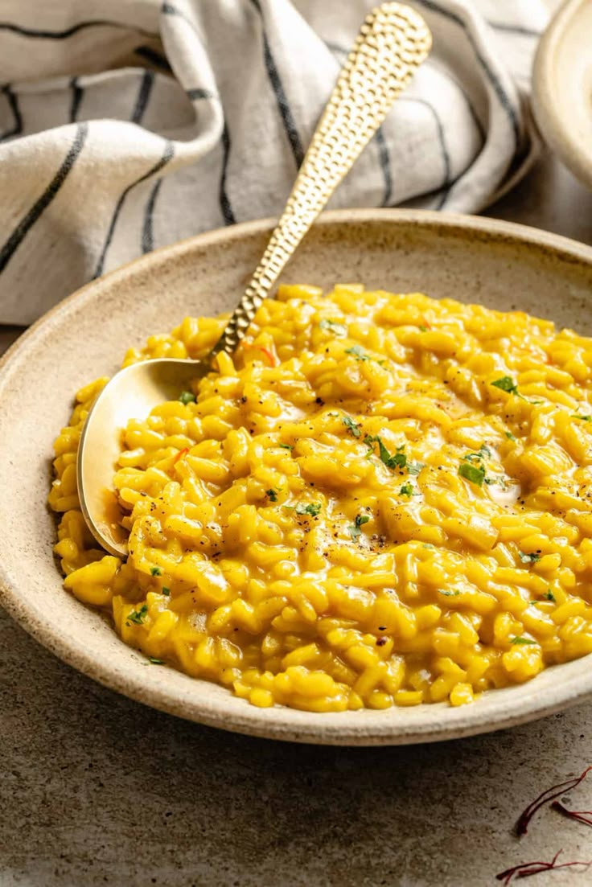

Risoto Alla Milanese
.
🍚 Risotto alla Milanese
Ingredientes:
- 320 g de arroz Carnaroli o Arborio
- 1 litro de caldo de carne o verduras, aproximadamente
- 1 cebolla pequeña
- 40 g de mantequilla
- 60 g de queso Parmigiano Reggiano rallado
- 1 sobre de azafrán o unas hebras de azafrán
- 100 ml de vino blanco seco
- 1 cucharada de aceite de oliva
- Sal, al gusto
- Pimienta negra, opcional
